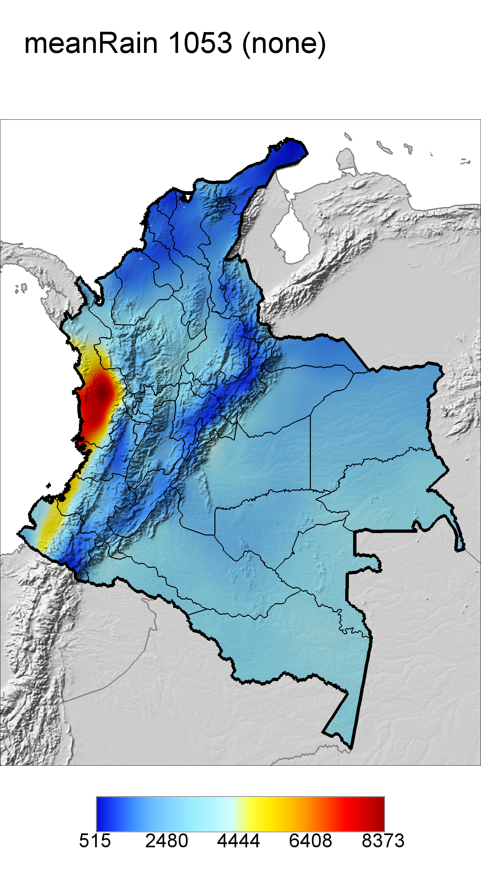
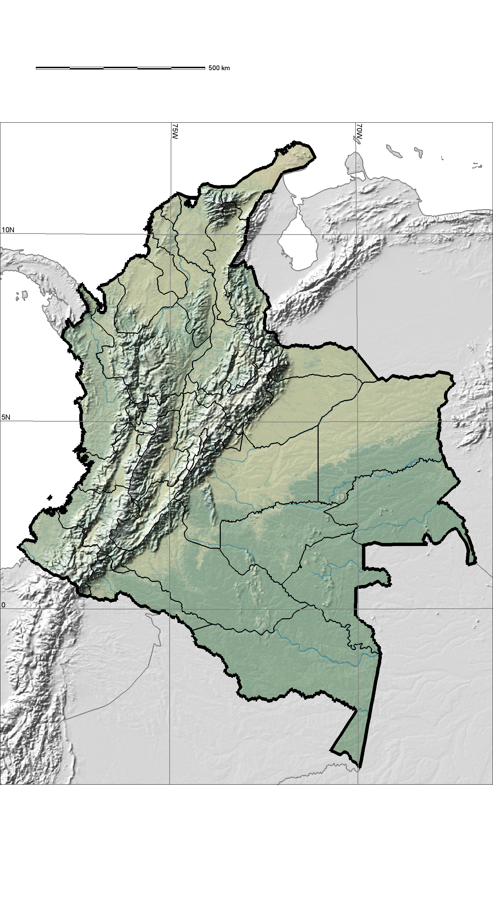

Report for "meanRain"
Output maps


Please, click on images to see stat report.
You may also see raster statistics as barcharts (zoned and overall) and as cell frequency histogram.
Mapping parameters
- Parameter mapped: 9
- Lower cutting point: 0
- Upper cutting point: none
- Region clip:
- Altitude clip: 10000 m
- Stations above altitude clip were used to interpolate: yes
Input file log
This log reports names of input files used for analysis:
- meanRain_coffee_03oct19_avg
GIS script syntax used:
map.pbdm.colombia
w=0 g=0 l=0 x=0
a=0 d=0 u=0 c=0
r=1 p=1
SaveDir=/c/cygwin/home/andy/outfiles/colombia_coffee_meanRain_full_extent longitude=4 latitude=5 year=11
parameter=9 interpolation=bspline numpoints=3
lowercut=0 uppercut=0 legend1=meanRain departments=all
alt=10000 resolution=1 lowBarCol= upBarCol=
crop=none crop_threshold=0.01
(Wed, 09 Oct 2019 19:37:31 +0200)